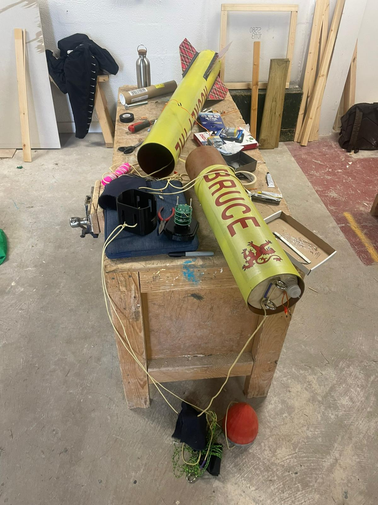

Motor Selection: Cesaroni 2372K1440
Due to accessibility of motors, the entire design of this rocket was based around the Cesaroni 2372K1440 solid rocket motor. Balancing the payload, motor and aerostructures together to achieve a desirable stability margin was the goal.
Motor Specs
- Total Impulse: 2372 N·s
- Average Thrust: 1440 N
- Max Thrust: ~1600 N
- Burn Time: ~1.65 s
- Diameter: 54 mm
- Length: 477 mm
- Propellant Mass: 1224 g
- Case Type: Cesaroni Pro54 6GXL
OpenRocket Simulation
Every rocket design begins with simulation software such as OpenRocket, RocketPy or MATLAB. Here, the team utilised OpenRocket to input each component’s weight, geometry and configuration. The important part here is maintaining a stability margin between 1.5–2.5, as per the Mach 2025 guidelines. Check the link for the full suite of requirements and competition standards: Mach 2025 Requirements PDF .
If you’re just getting started, OpenRocket is completely free, open-source, and well worth downloading — especially for hobbyist simulations, flight predictions, and early stability checks.
Distance between center of pressure and gravity, normalised by body diameter.
A complete openrocket design, ready for aerodynamic simulations.
Download Our OpenRocket File
You can explore and simulate our final dual-deployment rocket using the actual .ork file we used during development. Perfect for modifying, extending, or studying the setup.
OpenRocket Flight Data
These plots, generated by OpenRocket, offer insight into the rocket’s simulated flight performance — including altitude, velocity, acceleration, and aerodynamic drag throughout the ascent.

Full Rocket Assembly
Euan and Lewis holding Rocket the Bruce.
This page walks through the structural parts of a dual‑deployment rocket: from nose cone to fin can, plus payload bay and recovery system. Each section includes materials, dimensions, and assembly steps with image placeholders.
1 · Nose Cone
- Material: PLA printed with the university printer, 3 mm wall
- Length: 140 mm (excluding shoulder)
- Attachment: Shear pins and a slight friction fit
Sanded outside face and brushed with epoxy layer. To bring the CoG forward, as per the simulation, the deep pour epoxy in the nose cone acted as ballast
2 · Avionics Bay
- Material: Phenolic craft 2 mm wall
- Length: 200 mm
- Attachment: One bulkhead (wall division) is epoxied to the coupler and the other is epoxied to the eyebolts. The coupler is then epoxied to upper airframe (also phenolic craft)
The threaded screws act as a base to attach the electronics sled and are also acting as columns that will secure the avionics bay via nuts on the epoxied bulkhead.
Later, (airtight) holes are required in the bulkheads so that the flight computers can send the signal through the ignitors that activate the black powder charge, pressurising the airframe and pushing out the parachutes. This will be touched on later.
3 · Upper Airframe Tube

- Material Phenolic kraft, 141 mm OD, 3 mm wall
- Length: 500 mm
- Attachment: epoxy to avionics bay coupler
Arming switch holes are drilled on the upper airframe (this will be reflected upon in the conclusion, let's say it caused some issues). One for each flight computer, each computer can activate both main and drogue parachutes for redundancy.
4 · Payload: CanSat
- Length: 160mm
- Materials: PLA
- Electronics: Sensor suite (Accelerometer, Gyroscope, temperature, barometer, camera..), comms module, battery pack, microcontroller
Threaded inserts friction fitted to 3D print casing, threaded rods and spacers to secure PCB stack and to secure components, 3D printed structure with access ports for sensors, antennas and parachute attachment
5 · Lower Airframe Tube

The motor mount houses the motor according to its diameter. The centering rings allow the motor to be installed into an airframe thats larger, and safely transmit the thrust forces. The red motor retainer is then added to the bottom to keep the engine secured in every direction.
Once the vertical slots were machined (quite difficult with this brittle and large component), the assembly was inserted into the lower airframe where it was epoxied heavily to form one robust assembly.
7 · Recovery System & Test Videos

- Drogue: 14″ chute, BP release at apogee
- Main: 42″ chute, deployed at 300 m
- CanSat chute: 18″ chute, deployed at 300 m (had to be abandoned)
- Shock Cord: 1 m nylon, quick‑link anchors
Assembly: Connect cords to eyebolts on both separating assemblies, join the parachutes and pack with wadding to protect from ejection charge. We ended up moving the ejection charge from the underside of the avionics bay to the top of the motor. This was raised as an issue as there was a possibility that the ejection charge wouldnt push out the parachute but push it in.
Below are the final successful ejection tests from our recent visit at Mach 2025.
Drogue Recovery System Test Video
Main Recovery System Test Video
Reflections & Lessons Learned
Our team witnessed and evoked murphy’s law on multiple occasions during the design and assembly of this dual-deployment rocket. Anything that can go wrong, will go wrong. As this was our first high power rocket, many things were overlooked. It was extremely difficult to set up the avionics bay once the upper airframe had been epoxied: next year, ease of assembly and disassembly will be a priority. The avionics bay was also not airtight, which meant we had to epoxy them over. The arming switches were relentlessly loose and stuck out too far - screw switches and shorter wires would remedy this.
We had a shortage of time to complete the rocket due to organising health & safety procedures, workspaces and administrative tasks. This meant that we could not finish the electronics on the CanSat which was to take photos during descent and use AI to categorise the images. In future, better organisation and scheduling of tasks should eliminate this
Another reminder is to take as much resources as possible to the launch site. We had to rewire the ignitors on the day of launch, weigh out components, solder in new batteries, find new parachutes etc. All of these resources we were lucky to find off others, but having more spares/equipment would have streamlined the process.
In hindsight, a lot of which we didn't know before, seems obvious now. Many challenges will be overcome with ease and the calibre of our work will exponentiate. If anyone is considering working in the space industry, building a rocket like this is a great opportunity to develop industry skills, have fun working towards a gratifying, complex project and to join the cameraderie and community that is fostered within these events.
"Design. Simulate. Fail. Learn. Iterate. Launch." — Caledonian Rocketry